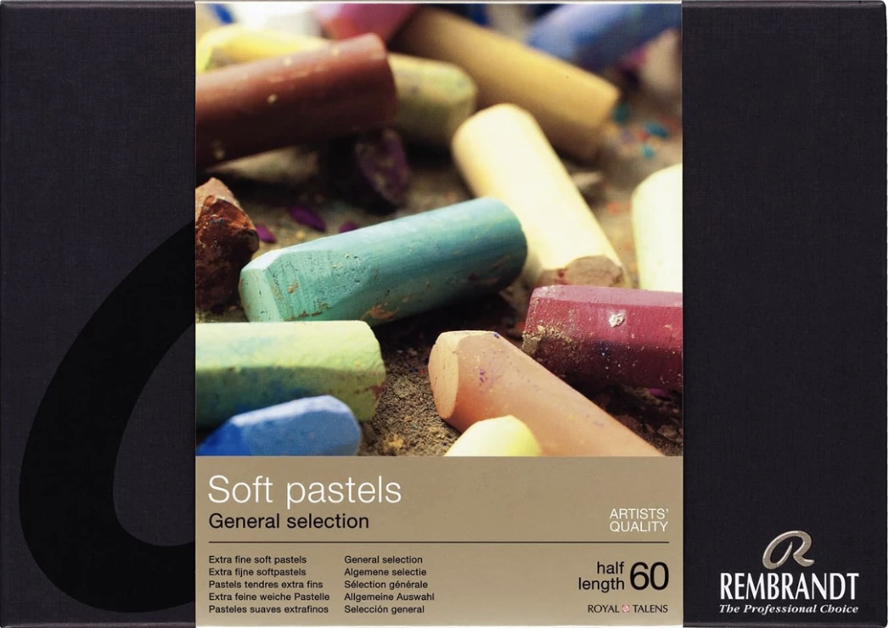

Home > Media

Soft pastels are composed of kaolin, a type of clay, finely ground pigment, and a very small amount of
binder. These ingredients are combined and rolled into sticks of colored powder that have to be hard enough
to hold their shape, yet soft enough to crumble when stroked across a page. The surface to which it is applied
must have a slight texture, or "tooth", to grab and hold the pastel on the surface. Soft pastels
are available in soft pastel sticks, in pans that can be applied with a sponge-like
tool, and as harder pastel pencils.
A pastel painting's optical vibrancy is the result of both the absence of yellowing resins in its composition and
the reflection of light from the multiple facets of the finely ground powder. Unlike watercolor, it is an opaque
medium that does not depend on the underlying brightness of the paper to impart luminosity.
This medium is the one I have come to learn most recently, and despite the relatively
short amount of time I have been working with them, I have to say they are my favorite
media to work in. The vibrancy of color, ability to layer, and the tactile experience
of working with them when blending has made them my most enjoyable medium.
I use Rembrandt soft pastels for the majority of my work. They are a medium-hard pastel
that are hard enough to create sharp details yet soft enough to blend easily. Unison pastels
are very soft, and I often use them over top of Rembrandt pastels to create highlights and
accents. For the finest details, I use Faber-Castell Pitt pastel pencils. Although there
are many pastel surfaces available, my favorite is Pastelmat. This cellulose support has
a velvet-like texture that is less abrasive than sanded paper, yet has enough tooth to
accept multiple layers of pastel.